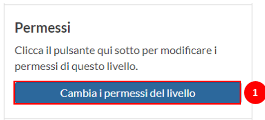
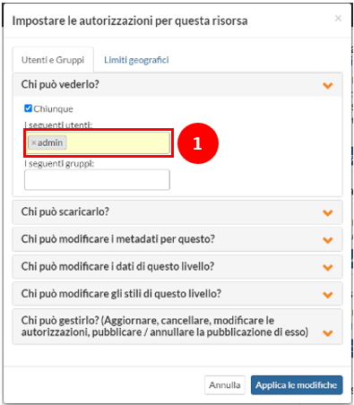

Layer’s Permissions
Layer’s Permissions#
An essential part of creating consciousness of communities on behalf of protecting natural resources is making data available to a community. However, in some cases, the data management should be limited regarding providing the metadata and styling that accompanies the datasets. For this reason, we will review how to grant specific permissions to specific users to perform certain actions over the data.
Access a layer page to manage the actions’ permissions and scroll down to the bottom of the page. On the right-hand side of the screen is the panel for modifying the layer’s permissions (see Fig. 27). To begin reviewing the permissions, click on Edit Permissions.
{kind=link}

Fig. 27 Edit layer permissions#
In the prompted form, there are several options for defining the actions that a user can perform (see Fig. 28), such as:
Who can view it?
Who can download it?
Who can edit the metadata?
Who can edit the data for this layer?
Who can manage the styles for the layer?
Who can manage it? (Update, remove, edit the permissions, publish/eliminate its publication?
For any of these questions, it is possible to identify the actions to be applied by everyone, specific users or groups.
{kind=link}

Fig. 28 Edit layer permissions#